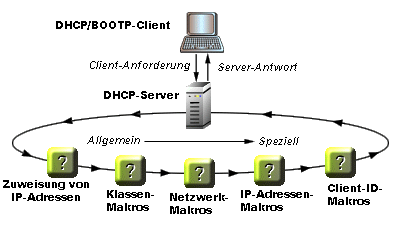

Übersicht
Solaris DHCP
Aufrufen von Hilfe
Informationen zu Makros und Optionen
In einer DHCP-Umgebung sind Makros Container für Optionswerte, die der DHCP-Server als Konfigurationsparameter an den DHCP-Client übergibt. Sie können z. B. ein Makro mit Optionen definieren, die angeben, dass alle Clients, die mit IP-Adressen eines bestimmten DHCP-Servers arbeiten, einen DNS-Server und einen Druck-Server verwenden sollen.Optionen geben das Format der Optionswerte in dhcptab des DHCP-Servers an (in der alle DHCP-Optionen und Makros gespeichert sind). So geben z. B. die Optionskategorie, der Datentyp, der Anbieter und die Granularität gemeinsam die Form der Optionen an, die in Ihren Makros enthalten sind. Das Erstellen und Ändern von Optionen wird auf den Hilfeseiten Erstellen einer Option und Ändern einer Option ausführlicher beschrieben.
Abarbeitung von Makros
Denken Sie beim Benennen von DHCP-Makros udn Hinzufügen von Optionen in Makros an die folgenden Gesichtspunkte:
-
Automatische Abarbeitung trifft auf Makros der Kategorien Client-Klasse, Netzwerk und Client-ID zu, wenn die Makro-Kategorie mit der Klasse des Clients, der Netzwerkadresse oder dem Client-Bezeichner übereinstimmt.
-
Makro-Kategorien legen die Reihenfolge der automatischen Abarbeitung von Makros fest.
-
Makronamen legen Makro-Kategorien (außer Makros für IP-Adressen, die durch eine Zuordnung zu einer IP-Adresse kalegorisiert werden) fest.
Bei den meisten Makros müssen Sie sicherstellen, dass die Namen Ihrer Makros mit den Namen der Ressourcen oder Geräte identisch sind, auf die diese Makros angewendet werden sollen. Beispiel:
Für Clients...
Name Ihres Makros
einer bestimmten Client-Klasse
Der selbe Name wie die Client-Klasse des DHCP-Clients. Die Client-Klasse wird vom Anbieter des Clients festgelegt. Der Name der Client-Klasse für einen Sun Ultra TM 1-Client ist SUNW,Ultra-1. Somit müssen Sie Ihr Makro SUNW.Ultra-1 nennen. Bei Solaris DHCP-Clients kann die Client-Klasse durch Eingabe des Befehls uname -i auf dem Client-Rechner ermittelt werden. Bitte beachten Sie, dass Makros keine Kommas enthalten dürfen; falls in der Client-Klasse ein Komma erscheint, muss es im Makronamen durch einen Punkt ersetzt werden.
in einem bestimmten Netzwerk
Identisch mit der IP-Adresse des Netzwerks, über das der Client eine Verbindung herstellt; nennen Sie Ihr Makro z. B. 10.0.0.0.
mit einer bestimmten IP-Adresse
Ein beliebiger Name, es wird jedoch die Verwendung des Host-Namens oder der IP-Adresse des DHCP-Servers empfohlen; nennen Sie Ihr Makro z.B. shiva oder 125.53.224.45 . Dieser Makrotyp ist als Konfigurationsmakro für alle Clients, die von diesem DHCP-Server Konfigurationsinformationen abrufen, nützlich.
die durch eine bestimmte Client-ID identifiziert werden
Identisch mit der eindeutigen Client-Kennung; nennen Sie Ihr Makro 010800201112B7.
-
Die Reihenfolge ist wichtig. Die Reihenfolge, in der die Makros abgearbeitet werden, ist von Bedeutung. Falls eine Option in mehreren Makros enthalten ist, ist der an den Client übergebene Wert dieser Option der Wert, der dieser Option im zuletzt abgearbeiteten Makro zugewiesen wurde . Makros werden in der Reihenfolge abgearbeitet, in der sie auf der Abbildung gezeigt werden.

Wie in der Abbildung gezeigt, erfolgt die Makroverarbeitung vom Allgemeinen zum Speziellen.
-
Makros für die Client-Klasse werden zuerst verarbeitet.
-
Netzwerkmakros werden als zweites verarbeitet, wobei widersprüchliche Einstellungen in den Makros der Client-Klasse überschrieben werden.
-
Makros für die IP-Adresse werden als drittes verarbeitet, wobei widersprüchliche Einstellungen in vorhergehenden Makros überschrieben werden.
-
Makros für die Client-ID werden zuletzt verarbeitet, wobei alle widersprüchlichen Einstellungen in allen vorhergehenden Makros überschrieben werden.
-
-
Makros können andere Makros enthalten. Makros können unabhängig von der Kategorie so verschachtelt werden, dass z. B. ein Makro für eine Client-Klasse von einem Makro für eine IP-Adresse aufgerufen werden kann.
Zurück zum Anfang